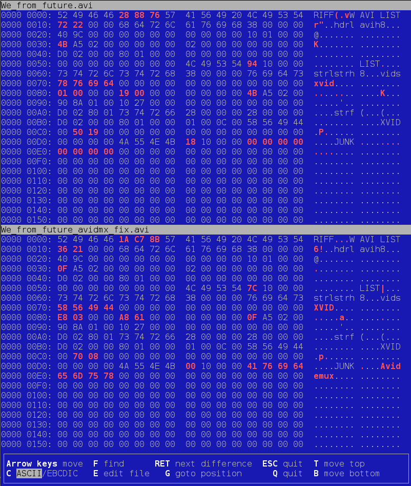

Для сравнения бинарных файлов в Linux можно воспользоваться программой vbindiff:
vbindiff file1 file2
Откроется ncurses-интерфейс, в котором интерактивно можно просматривать различия. Выглядит он вот так:

Сверху и снизу показывается один и тот же кусок, взятый из разных файлов. Есть возможность поиска в шестнадцатеричном и текстовом виде (кнопка F). Можно даже по кнопке E редактировать первый (верхний) файл. Правда есть какое-то ограничение, когда режим редактирования не включается. Возможно, это зависит от размера файла.
Для быстрого перехода к следующему различию можно нажимать клавишу Enter (она же Return).